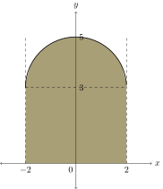

6.4
Integral Tertentu
Definisi 6.4.1.(Luas Di Bawah Kurva)
Jika suatu fungsi $f$ kontinu pada $[a,b]$ dan jika $f(x)\geq0$ untuk
semua $x$ pada $[a,b]$, maka luuas dari daerah yang dibatasi oleh
sumbu-$x$ dan kurva $y=f(x)$ sepanjang interval $[a,b]$ didefinisikan
oleh $$L=\lim_{\text{max }\Delta x_k\to 0}\sum_{k=1}^n f(x^*_k)\Delta
x_k$$
Definisi 6.4.2.
Jika fungsi $f$ kontinu pada $[a,b]$ yang bernilai positif dan
negatif, maka nilai integral ternttentu dari $y=f(x)$ pada interval
$[a,b]$ didefinisikan sebagai $$\int_a^bf(x)dx=\lim_{\text{max }\Delta
x_k\to 0}\sum_{k=1}^n f(x^*_k)\Delta x_k$$
Definisi 6.4.3.
Jika fungsi $f$ terdefinisi pada interval tertutup $[a,b]$ maka $f$
dikatakan terintegral Riemann pada $[a,b]$ atau secara singkat disebut
terintegral pada $[a,b]$ jika $$\lim_{\text{max }\Delta x_k\to
0}\sum_{k=1}^n f(x^*_k)\Delta x_k$$ ada. Jika $f$ terintegral pada
$[a,b]$, maka didefinisikan integral tertentu dari $f$ untuk $x=a$
sampai $x=b$ dengan $$\int_a^b f(x)dx=\lim_{\text{max }\Delta x_k\to
0}\sum_{k=1}^n f(x^*_k)\Delta x_k$$
Definisi 6.4.4.
- Jika $a$ berada dalam domain $f$, maka didefinisikan $$\int_a^a f(x)dx=0.$$
- Jika $f$ terintegral pada $[a,b]$, maka didefinisikan $$\int_b^a f(x)dx=-\int_a^b f(x)dx.$$
Teorema 6.4.1.
Jika $f$ dan $g$ terintegral pada $[a,b]$ dan jika $c$ suatu konstanta
maka $cf$, $f+g$, dan $f-g$ semuanya terintegral pada $[a,b]$ dan
- $\int_a^b c f(x)dx = c\int_a^b f(x)dx$.
- $\int_a^b [f(x)+g(x)]dx = \int_a^b f(x)dx + \int_a^b g(x)dx$
- $\int_a^b [f(x)-g(x)]dx = \int_a^b f(x)dx - \int_a^b g(x)dx$
Teorema 6.4.2.
Jika $f$ terintegral pada suatu interval tertutup yang memuat tiga
titik $a$, $b$, dan $c$ (tidak harus $a<c<b$), maka
$$\int_a^bf(x)dx=\int_a^cf(x)dx+\int_c^bf(x)dx.$$
Nilai integral tertentu tidak dipengaruhi huruf yang digunakan sebagai peubah integrasi, asalkan tidak mengubah batas integral.
Teorema 6.4.3.
- Jika $f$ terintegral pada $[a,b]$ dan $f(x)\geq0$ untuk semua $x$ dalam $[a,b]$, maka $$\int_a^b f(x)dx\geq0$$
- Jika $f$ dan $g$ terintegral pada $[a,b]$ dan $f(x)\geq g(x)$ untuk semua $x$ dalam $[a,b]$, maka $$\int_a^b f(x)dx\geq \int_a^b g(x)dx$$
Definisi 6.4.5.
Suatu fungsi $f$ dikatakan terbatas pada suatu interval $[a,b]$ jika
terdapat bilangan positif $M$ sedemikian hingga $$-M\leq f(x) \leq M$$
untuk semua $x\in [a,b]$. Secara geometrik, hal ini berarti grafik $f$
pada interval $[a,b]$ terletak di antara garis $y=-M$ dan $y=M$.
Teorema 6.4.4.
Misalkan $f$ suatu fungsi yang terdefinisi di semua titik pada
interval $[a,b]$.
- Jika $f$ kontinu pada $[a,b]$, maka $f$ terintegrasi pada $[a,b]$.
- Jika $f$ terbatas pada $[a,b]$ dan hanya mempunyai berhingga titik diskontinuitas pada $[a,b]$, maka $f$ terintegral pada $[a,b]$.
- Jika $f$ tidak terbatas pada $[a,b]$, maka $f$ tidak terintegral pada $[a,b]$.
Contoh 1 (EAS 2019/2020)
Hitunglah integral tertentu berikut dengan menggunakan rumus luas dari
geometri bidang. $$\int_{-2}^2(3+\sqrt{4-x^2})dx$$
Pembahasan
Perhatikan bahwa \begin{align*} x^2+(y-3)^2&=4\\ (y-3)^2&=4-x^2\\
y-3&=\pm \sqrt{4-x^2}\\ y&=3\pm \sqrt{4-x^2} \end{align*} Dengan
demikian, $y=3+\sqrt{4-x^2}$ merupakan setengah bagian atas
lingkaran berjari-jari $2$ dan memiliki titik pusat di $(0,3)$.
Integral $$\int_{-2}^2(3+\sqrt{4-x^2})dx$$ merupakan luas di bawah
kurva $y=3+\sqrt{4-x^2}$ yang dibatasi oleh sumbu-$x$ untuk $x=-2$
hingga $x=2$.

Luas daerah tersebut dapat dihitung dengan menggabungkan luas persegi panjang dengan ukuran $4\times 3$ dan setengah lingkaran berjari-jari $r=2$. Misalkan $L_1$ merupakan luas persegi panjang dan $L_2$ merupakan luas setengah lingkaran. $$L_1=\text{panjang}\times\text{lebar}=4\times 3=12$$ $$L_2=\frac{1}{2}\pi (r^2)=\frac{1}{2}\pi (2^2)=\frac{1}{2}(4)\pi=2\pi$$ $$L=L_1+L_2=12+2\pi$$ Karena daerah yang diarsir berada di atas sumbu-$x$, hasil integral bernilai positif. $$\int_{-2}^2(3+\sqrt{4-x^2})dx=12+4\pi$$Latihan!
EAS 2020/2021
Dengan menggunakan rumus luas dari geometri bidang, hitunglah
$$\int_0^45-\sqrt{16-x^2}dx.$$
Jawab:
EAS 2019/2020
Hitunglah integral tertentu berikut dengan menggunakan rumus luas
dari geometri bidang. $$\int_{-2}^2 2f(x)dx$$ di mana
$f(x)=\begin{cases} 3,\quad x\leq0\\ x+3,\quad x>0 \end{cases}$
Jawab: